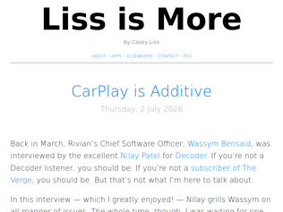
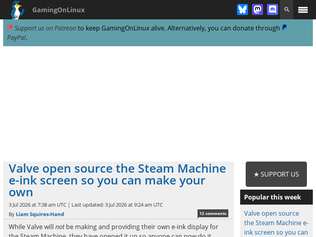
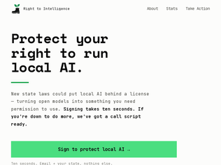

"One important part of the story is in the very beginning: The founder’s motivation. To become wealthy.You see this in the startup world a lot. Founders with 5+ failed startups in different sectors, because said founder picked the fields mainly by doing some market analysis. Not domain expertise.There’s then a big mismatch between what the founder thinks is possible, and what the domain expert thinks is possible.The defense is of course that some people can do that - Musk did it, so why not?Another defense is that blindingly naïve optimism is sometimes needed to move the needle, as the concept “that can’t be done” simply doesn’t exist to some people.I’ve sat through some pitches like that, where it is very obvious that the founder/CEO has limited knowledge and expertise in what they’re pitching, where the product is limited, but their enthusiasm is off the charts.EDIT: The very latest happened only a couple of weeks ago. A startup had reached out to my employer as they’re developing a platform in our domain. Higher ups liked what they’d seen, enough to arrange a real meeting.Startup is only 3 months old, and the moment I opened the platform I recognized a vibecoded (likely using clause) platform identical to almost all other launched on a daily basis.So I probed a bit about data sources, serious questions regarding security, etc. but the guy was pretty fluent in consultant (turns out he had worked as a management consultant before launching), and the CTO was just nodding along.In the end they wanted our data, and promised the moon on features - but as mentioned, I’m sure the whole product was entirely vibecoded."
"Oh, I'm glad I don't work in the oven business. We're just starting a stealth startup that's revolutionizing dishwashers, and the prototypes are amazing. They use less water, less detergent, and this weekend we're hoping to solve the last remaining issue: occasionally, they break glasses."
"We keep seeing this. If you had to point out the fundamental problem, what would it be?I think it’s the disconnect. Each persona is an expert in their own field but is completely oblivious to other critical areas.The founder knows how to raise money but doesn’t really understand the customers. The engineer knows the tech but doesn’t really understand what it takes to keep the business afloat. The salesperson knows what customers want but doesn’t really understand what’s possible to make. The investor knows the numbers but doesn’t really understand how poorly the business is run.I suspect if you look at successful startups you’ll often see a very small (1-3) group of founders who are very close, each can do more than one thing really well, and their combined expertise means that together they have very few blindspots."
"I teach a free software development course to my undergrad students. It's really exciting to stumble upon one of the work they did for my class in the wild (it's the first listed bug fix — which is the last of the three pull requests this student got merged in Immich during my course). I feel so proud! :)"
"An incredible piece of software, on par with Google Photos. I've been using it behind Tailscale for months with no problems ever since I first got into homelabbing.Actually, moving from Google Photos to Immich after I hit my 100GB storage limit was the whole reason I got into self-hosting, and what a fun ride that has been!I can't believe self-hosted products of this caliber are free. Huge shout-out to HomeAssistant, PiHole, paperless-ngx, Dawarich, and countless others for the same reason.Congrats to the team on the release and thank you for helping me catalogue my personal memories"
"A lot of people talking about encryption in the comment section, thought I would share my setup. I have been running Immich for family and friends on a Hetzner auction server for about 1.5 years now.Hetzner community provides official full-disk encryption documentation:https://community.hetzner.com/tutorials/install-debian-with-...Letsencrypt gives free reliable SSL. You can easily hide Immich behind Nginx proxy that handles SSL for you.Add cron based automated backup of the entire Immich data to a local encrypted NAS and there you go. Reliable, end-to-end, encrypted at rest setup. So far, it required exactly 0 maintenance.It’s also more secure because I just drop traffic from all but 3 geographies at the IP level. And you can also add a WAP on the Nginx proxy.It is also more more secure than Google/iCloude because the „employee of the company“ attack vector is much smaller. It’s documented that Google looks at your photos and is perfectly happy to file false police reports: https://www.eff.org/deeplinks/2022/08/googles-scans-private-...By comparison, yes it is theoretically possible for Hetzner employees to access my server physically and extract the encryption key from RAM, or setup a fake SSH server to try to steal the key, but that is far more complicated attack and hasn’t been documented yet. And it risks detection."

"For pure interaction, CarPlay as a generic solution is very hard to beat infotainment systems that are deeply integrated with the vehicle itself. Its advantages are mainly these:- Consistency. You get into a new car, all you need to figure out is how to open CarPlay, no need to learning a completely different and often complicated infotainment system.- "It's on your phone". You can decide what playlist to play or where to navigate before you even get into the car.- Stays up to date over the long term. Just look at cars from five years ago. Most built-in infotainment systems are still stuck in that era, no matter how smart they once looked. CarPlay uses your phone as the main computing platform, and the car's infotainment system only needs to act as a thin client for I/O, it keeps updating with iOS."
"Surprised no one's mentioned it so far, but CarPlay / Android Auto aren't just features, they're consistency. Across makes, models, years. I know what I'm getting when I connect my phone - and if anyone uses my car with their own device, they get their own dashboard, as well. One interesting use case I saw was a couple where one used a left-to-right interface and the other a right-to-left UI. CarPlay makes this easy, because the interface is linked to your own personal device."
"Author says "I literally will not buy a car that does not support CarPlay."From July 2022: https://www.cnbc.com/2022/07/22/apple-carplay-could-be-a-tro... Apple engineering manager Emily Schubert said 98% of new cars in the U.S. come with CarPlay installed. She delivered a shocking stat: 79% of U.S. buyers would only buy a car if it supported CarPlay. “It’s a must-have feature when shopping for a new vehicle,” Schubert said during a presentation of the new features."

"I wish more hardware companies treated these kinds of optional add-ons as something the community can run with instead of either productizing them badly or locking them away completely..."
"In case you're wondering and don't want to click around, the display is a standard Adafruit 5.83'' eInk panel: https://www.adafruit.com/product/6397"
"I'd love to see an easy guide to doing this with the Framework Desktop form factor. I didn't buy any of the silly little squares for the front of mine since I figured I could 3D print some later, but six months in still haven't gotten around to it."
"This article came up before. It's heavy on the clickbait, if you couldn't guess from the title.Some important points that they leave out:- 25G internet isn't available everywhere in Switzerland. It's just the fastest tier available in some locations.- The United States is 85 times larger than Switzerland. The entire country of Switzerland is the size of a small US state. Covering the US with broadband is much harder than Switzerland.- 25G internet is also available in some locations in the United States.- As another commenter discovered, the average speed test results of US and Swiss internet connections are pretty similar. The average Swiss person isn't connected to the internet faster than the average United States person."
"Getting a Spectrum cable modem internet connection in NYC in 2026 is so deeply humiliating.Dealing with the ridiculously limited upload speed, the outages, the locked router. The 40 minutes it takes on the phone to get it disconnected. Their constant attempts at upselling you cell phone plans and other terrible tech you’d never consider.Truly, Fios is the most bare minimum. And there are much better options if you can pay commercial rates (stealth.net! Pilot!).Truly embarrassing and sad."
"I guess they don't bother using Speedtest in Switzerland, as the average speed seems about the same as the US: https://www.speedtest.net/global-indexMust be a sampling bias or something."
"While it is certainly an interesting bug, I kinda feel that the title is click bait? Because this `cryptsetup luksSuspend` from what I understood is not really officially supported but an extension done in Debian, so if anything this regression only affected Debian? I am not sure if you can blame the kernel for something that is not supported or even widely tested.I still find this impressive, and it is nice that we now have a test (NixOSTests BTW are awesome, I agree with OP) to avoid this regression from coming back. But from the title it seems to be a widespread issue, not something that affects only one Distro."
"I don't see any other way? When you sleep (suspend to RAM), everything is stored in RAM and is encrypted but the master key is present in kernel memory (if I recall correctly).However, if you hibernate (suspend to disk) the entire contents of RAM (including the master key) is written/encrypted to disk and the RAM is cleared.When you wake the machine up you have to re-enter the passphrase to decrypt the master key to re-load disk contents back to memory."
"I don't have to re-enter my boot password after Sleep, so obviously the encryption key is still in memory."

"Laws restricting the use of local AI/LLMs are not going to happen, no matter how much Anthropic might want it. All the major OEMs are now counting on local LLMs to take off. Just look at the OEM support for the upcoming Nvidia RTX Spark platform: Asus, Dell, HP, Lenovo, Microsoft, MSI. All the big names in the industry will have, by the end of this year, Nvidia-powered machines made specifically for local LLM use."
"Is anyone seeing this?```Warning Suspected Phishing This website has been reported for potential phishing.Phishing is when a site attempts to steal sensitive information by falsely presenting as a safe source.Cloudflare Ray ID: <retracted_because_what_is_this> • Your IP: • Performance & security by Cloudflare```Who "reports" this? And why does cloudfare take them down? How does this even work?"
"I'm more worried about getting cut off from hardware because Nvidia can make more money selling to datacenters than I am about getting cut off from software."
"This was an excellently written, salient post with some good tidbits.I've learned some of these lessons the hard way. I'll add a few. Proof of work is important, but it's not about the magnitude of energy you spend. I went through two iterations of reaching out to my college network. The first time I put so much time into handwriting notes and trying to provide my relatable background. 100 notes, not a single response.The second time I sent emails that were a few sentences. I had a much clearer ask and devoted the effort into fitting my questions into the email. I wanted a conversation really, but I also tried to communicate what I planned to ask.15% response rate and invaluable conversations. Less overall "work".Secondly, and relatedly, don't ever waste someone's time. Don't ask for / accept a meeting if you don't have some semblance of a clear ask. It's hard, especially in early stage business where you're trying to discover what you don't know. But you can try to lay out your tier 1 "here's what I think", "here are the follow ups".I sensed once that I had irritated someone by lacking the agenda. Another time I took a mutual connection up on an intro where I didn't know what I really needed. I regret both of these.Thirdly try to pay it forward. It won't always come back around, but you can feel more comfortable asking for help and more cognizant of what a helper (so to speak) is thinking"
"> One of the strongest ways to show that you’re worth helping is to demonstrate that you are a serious personWhen I’ve been in positions where a lot of people ask for help, this is the #1 place I saw people drop the ball.The advice to show proof of work up front is important. What isn’t so obvious is that the proof of work needs to go deeper than surface level. Putting up a single blog post or having Claude write some code that you upload to GitHub doesn’t cut it. You have to show that you’ve been putting effort into this for all the right reasons, not just as a ploy to appear like a serious person. When you get 10 requests for help every week you get very good at being able to tell who has been putting in the work and who thought they could appear like a serious person by putting on a little show.This doesn’t end after you get the meeting. Following up is just as important. When someone makes time to hear you out and offer advice, you need to demonstrate that you tried what they suggested. You can choose not to follow their advice, but that’s probably the end of the help you receive. It’s a choice.The easiest way to blow it is to ask for someone’s help, then ignore it or fail to follow through. If someone helps you, follow up with some contact to explain how it helped, or at least how you tried it. Nothing is more frustrating than setting aside time to help someone and then a month later you run into them and learn that they haven’t gotten around to doing the thing they wanted help with."
"The problem here is that most points are about how to formulate your ask. I think the biggest thing is that you're much more likely to get help if you show you're doing the best to solve it yourself.There's a big difference between:"Hey, I saw this job at [company you work at], could you refer me please? I'm [lists skills and experience]"and"Hey I'm thinking of applying to [company you work at] for the product designer position and I want to make an impression, so I'm putting together a demo Figma with a couple of things I'd fix and how. I spotted those when I did the onboarding for your free trial. I'm curious if you could tell me whether [design flaw] is intentional to deter abuse or if that's something I could fix? Totally get if that's confidential"The part where you're solving the problem instead of hoping someone else will solve it for you, that's much more important then how you word it."
"I've known about Cal-Maine's scammy practices for years. It's difficult to know which brands are associated with a group like Cal-Maine, but I did my best at one point to get a list which I still check before buying eggs.The brands I've been avoiding are: 4Grain Cage Free Egglands Best Farmhouse Eggs Land O'Lakes Fassio Egg Farms Southwest Specialty Eggs LLC Rocky Mountain Eggs Meadowcreek Foods Specialty Eggs LLC Red River Valley Egg Farm ProEgg Inc. Dixie Egg Co. American Egg Products LLC Texas Egg Products LLC Wharton County foods Benton County Foods Sunups Sunny Meadow Mahard Egg Farm Maine Egg Farms Other Cal-Maine associated brands: Ralston-Purina, Pilgram's Pride, Adams Foods, Dairy Fresh Products, Foodonics Int'l,Versova is new to me, but I'll try to avoid them too. It looks like their brands include: Center Fresh Group Centrum Valley Farms Iowa Cage FRee Hawkeye pride Ovation Farms Trillium Farms Willamette Egg Farms"
"I did not realize the egg crisis was found to be price fixing operation.As I recall during the whole thing the news was non-stop about how it was related to broad-based inflation, chicken culling for avian flu, etc. Seems like all that was a lie, or at least merely a half-truth."
"Wow, well I have egg on my face. I have frequently used this as an example of the "oh so the egg guys got greedy and then got saintly" to parody the idea that price is primarily determined by greed. Welp! Now to see if I can eke out some pride by finding out what percentage of the price fluctuations was due to coordination.> During the 2024 campaign, when Kamala Harris meekly suggested price gouging to tame inflation,...Haha, she suggested going after price gouging. Though the idea of someone meekly suggesting price gouging is funny."
"> On June 4, 2026, the U.S. Secretary of Commerce issued a directive (DAO 216-26)> DAO-216-26 bans differential privacy and other modern (and not so modern) techniques. It restricts disclosure avoidance techniques to “coarsening,”> DAO-216-26 forbids “noise infusion”, described as “methods that involve modifying a dataset by adding random values, or noise.”> By forbidding noise infusion, the directive bans the disclosure avoidance techniques at the core of dozens of data releases over the last three decades.> Civil servants will do their best to comply with this order while still following the laws that require them to protect the confidentiality of respondents’ data. To balance these competing mandates, they may seek to produce less data or coarsen data so much that it is unusable. Or they might be pushed by political actors to publish data that can be easily unmasked...This current administration is cursed."
"This post's call to action is talking to your legislators, but it's missing a link to do so. Find yours here: https://www.congress.gov/members/find-your-member"
"What is the political goal behind this directive? I assume there is some completely non-subtle purpose, but I can't tell what it is."

Half-Baked Product
"One important part of the story is in the very beginning: The founder’s motivation. To become wealthy.You see this in the startup world a lot. Founders with 5+ failed startups in different sectors, because said founder picked the fields mainly by doing some market analysis. Not domain expertise.There’s then a big mismatch between what the founder thinks is possible, and what the domain expert thinks is possible.The defense is of course that some people can do that - Musk did it, so why not?Another defense is that blindingly naïve optimism is sometimes needed to move the needle, as the concept “that can’t be done” simply doesn’t exist to some people.I’ve sat through some pitches like that, where it is very obvious that the founder/CEO has limited knowledge and expertise in what they’re pitching, where the product is limited, but their enthusiasm is off the charts.EDIT: The very latest happened only a couple of weeks ago. A startup had reached out to my employer as they’re developing a platform in our domain. Higher ups liked what they’d seen, enough to arrange a real meeting.Startup is only 3 months old, and the moment I opened the platform I recognized a vibecoded (likely using clause) platform identical to almost all other launched on a daily basis.So I probed a bit about data sources, serious questions regarding security, etc. but the guy was pretty fluent in consultant (turns out he had worked as a management consultant before launching), and the CTO was just nodding along.In the end they wanted our data, and promised the moon on features - but as mentioned, I’m sure the whole product was entirely vibecoded."
"Oh, I'm glad I don't work in the oven business. We're just starting a stealth startup that's revolutionizing dishwashers, and the prototypes are amazing. They use less water, less detergent, and this weekend we're hoping to solve the last remaining issue: occasionally, they break glasses."
"We keep seeing this. If you had to point out the fundamental problem, what would it be?I think it’s the disconnect. Each persona is an expert in their own field but is completely oblivious to other critical areas.The founder knows how to raise money but doesn’t really understand the customers. The engineer knows the tech but doesn’t really understand what it takes to keep the business afloat. The salesperson knows what customers want but doesn’t really understand what’s possible to make. The investor knows the numbers but doesn’t really understand how poorly the business is run.I suspect if you look at successful startups you’ll often see a very small (1-3) group of founders who are very close, each can do more than one thing really well, and their combined expertise means that together they have very few blindspots."